PAVY SHALA
Cooking Classes
Personalised cooking sessions with Bharathi Sheshadri, arranged on request.
Cooking Classes at PAVY Shala
Cooking classes are available with Bharathi Sheshadri on request. Classes can be personalised to your interests. Contact the shala to make arrangements.
As each session is arranged according to your interests, please get in touch to discuss what you would like to learn and to request a suitable time.
Enquire About Cooking Classes →COOKING CLASS
Moments from Our Cooking Classes
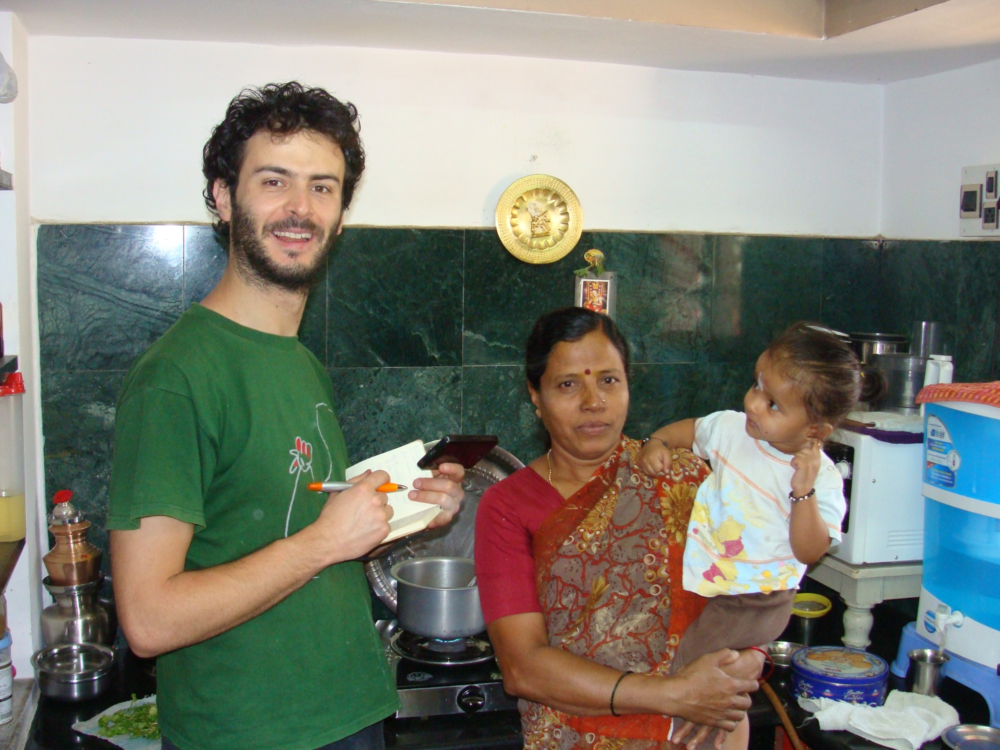
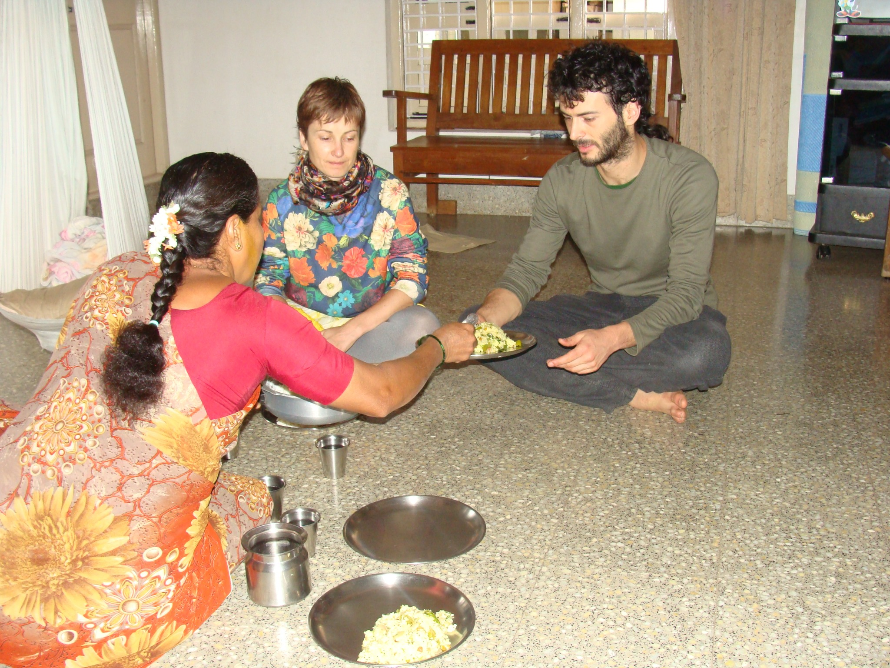
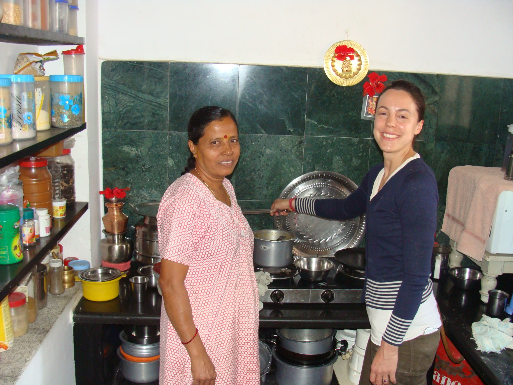
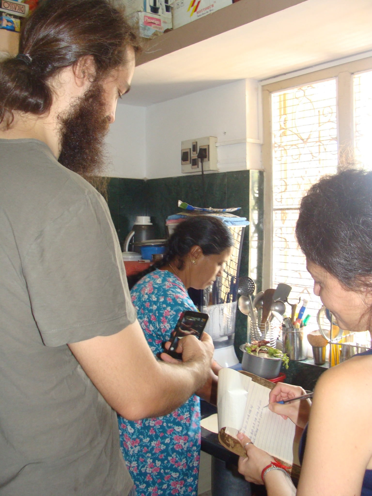
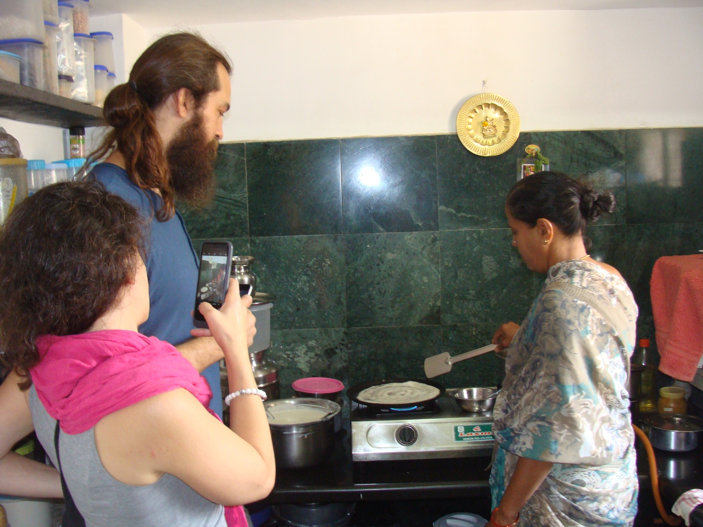
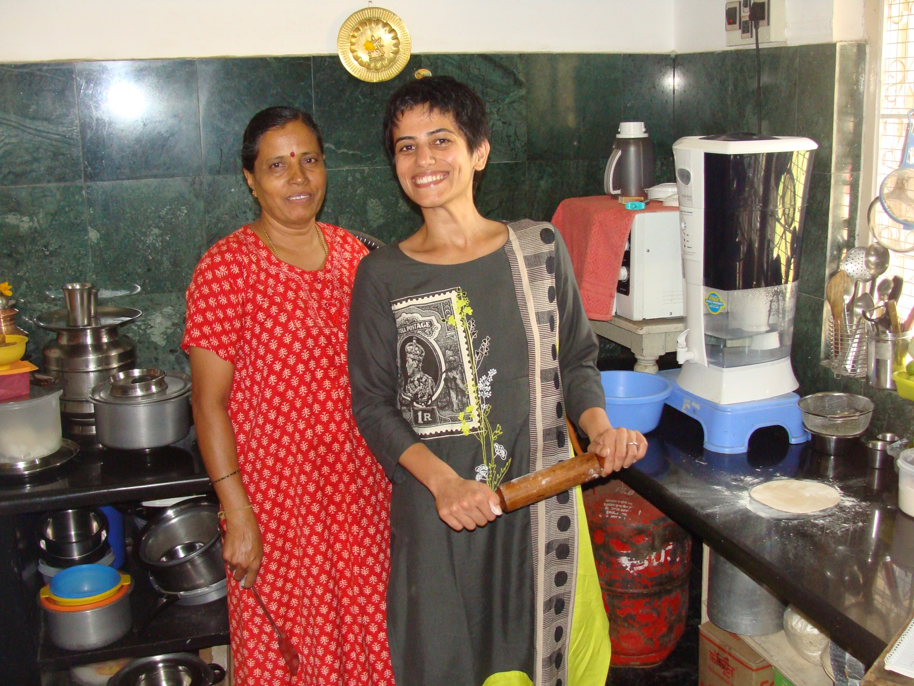
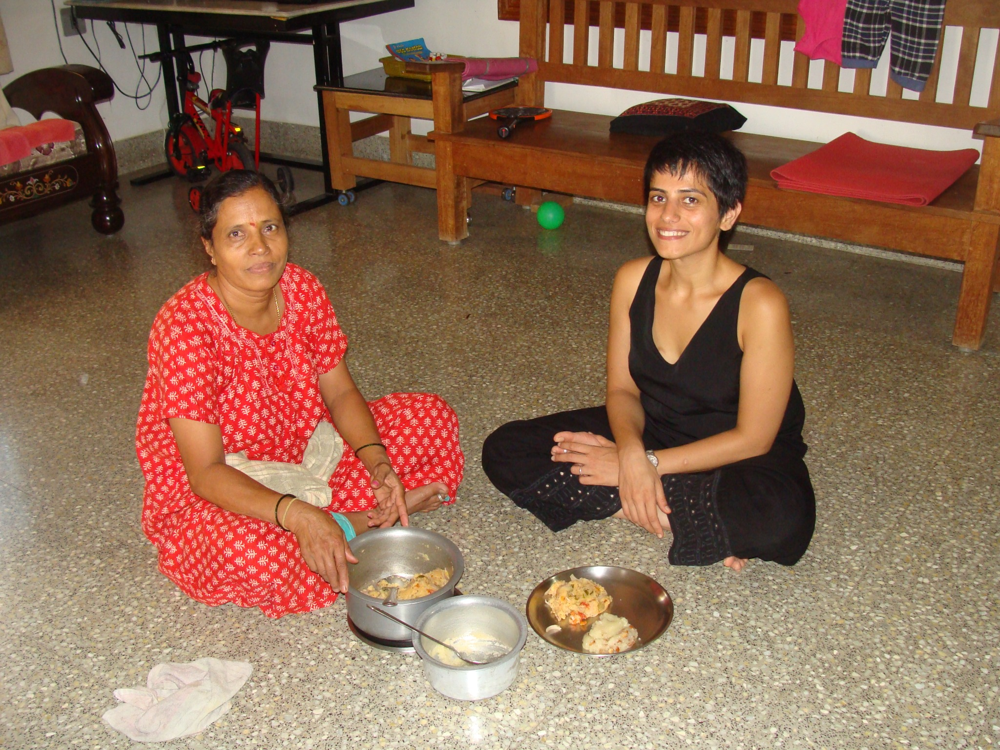
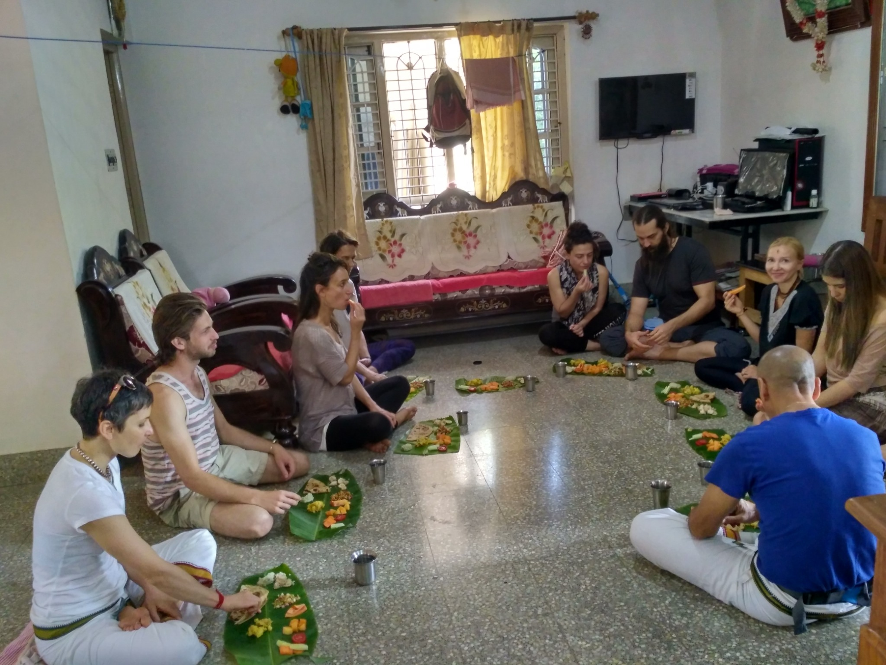
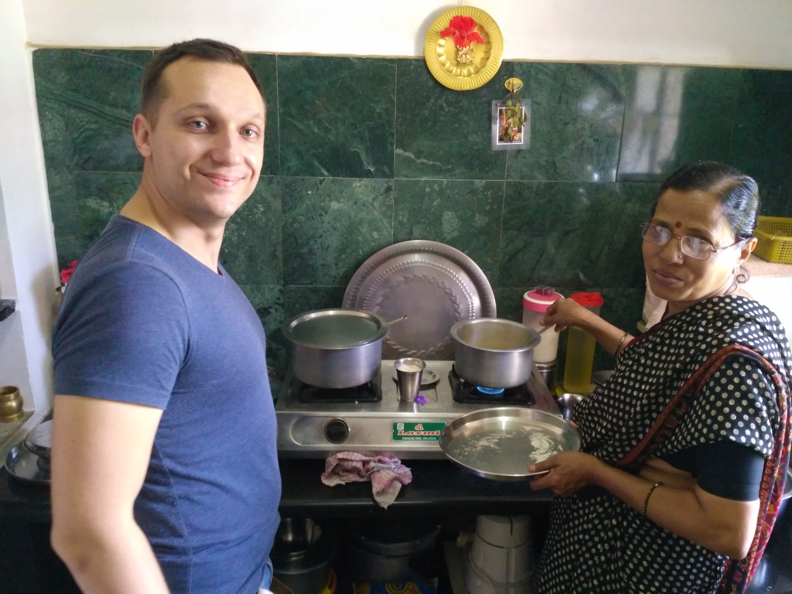
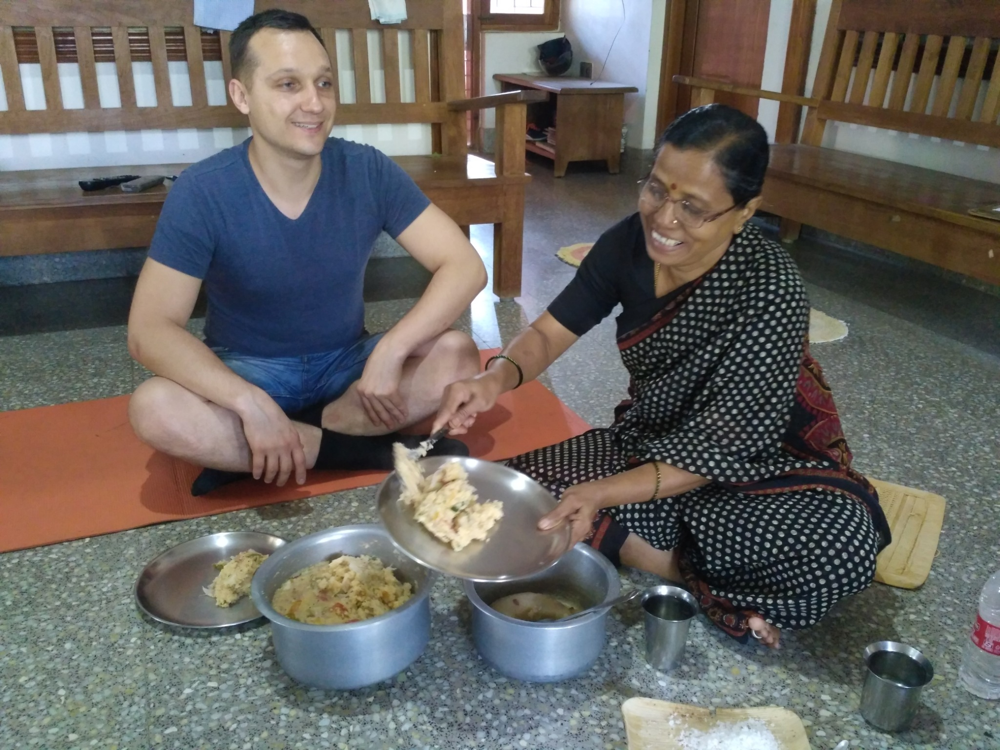
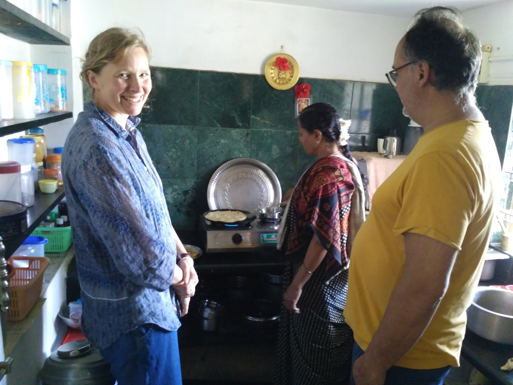
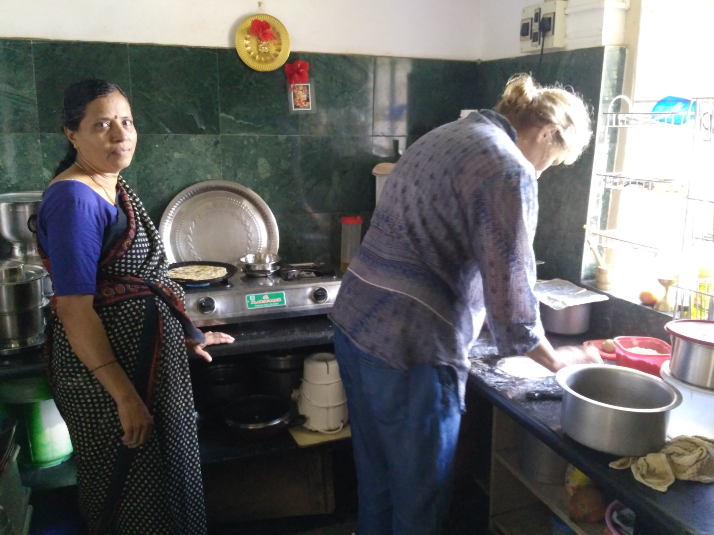
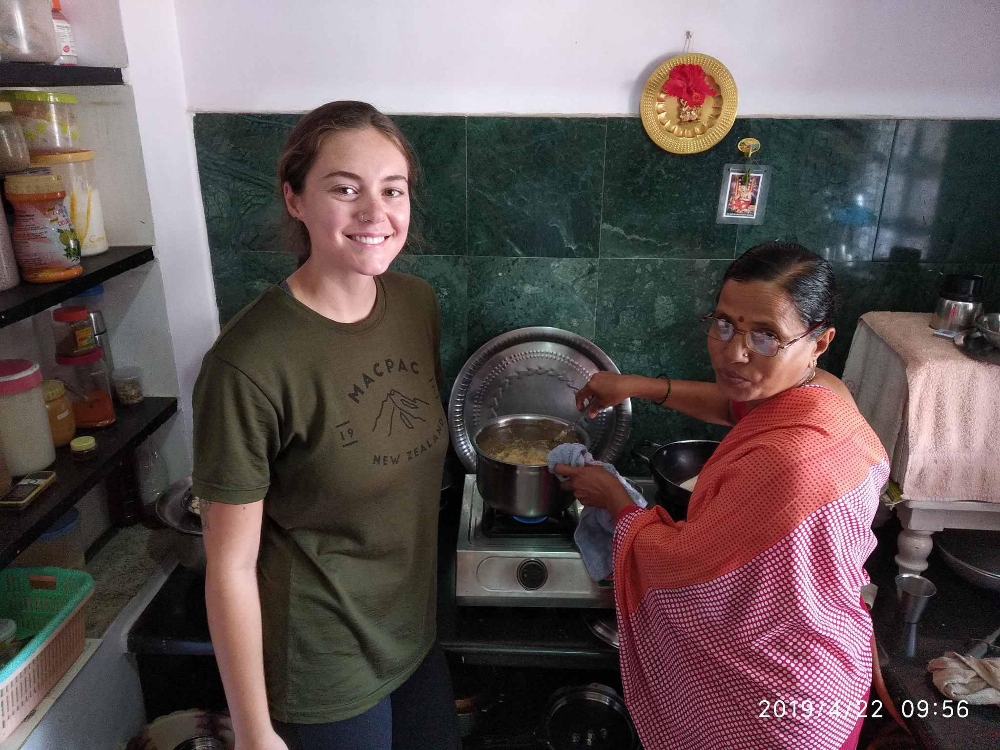
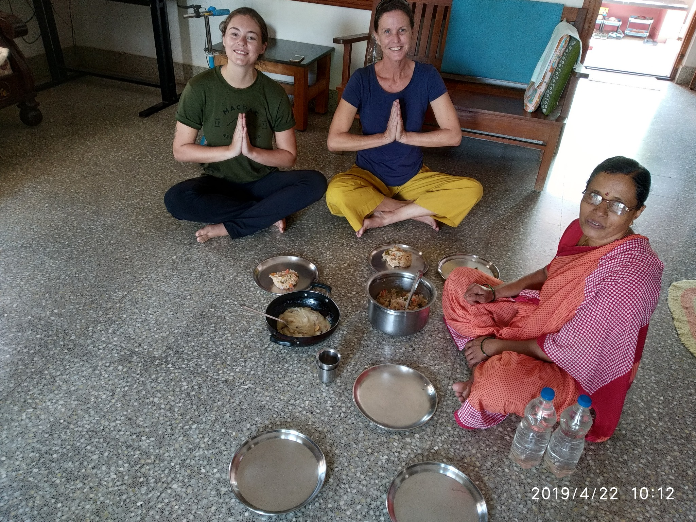